Primary dataset: CKD_NHANES_2021_2023. Analysis prepared for Mini Hackathon 1.
Three supplied datasets were audited. The NHANES-style file has the largest sample (11,933 rows) and rich clinical variables. The 4,800-row dataset has no missing values but appears strongly synthetic in several ranges. The classic 400-row dataset is small and has substantial missingness. The NHANES-style file was therefore selected as the primary dataset.
There are no duplicate rows. Missingness is concentrated in laboratory variables and some questionnaire-derived fields. The main pipeline uses median imputation for numeric values and most-frequent imputation plus one-hot encoding for categorical values.
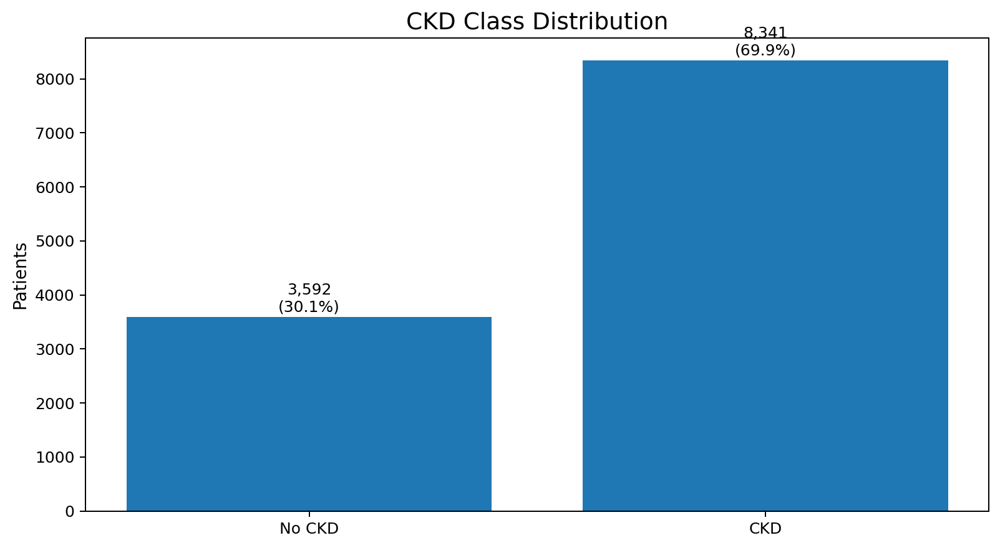
Finding: CKD is the majority class (~69.9%), so stratified splitting is used.
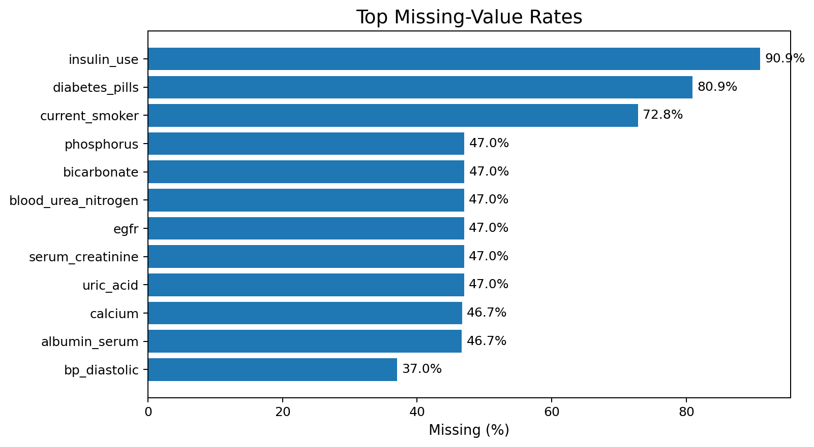
Finding: several laboratory fields have roughly 47% missingness; imputation is essential, but the extent of missingness is also a modeling limitation.
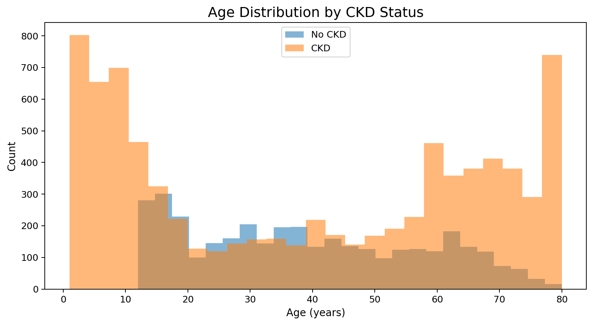
Finding: Age distributions overlap, so age alone is not sufficient for classification.
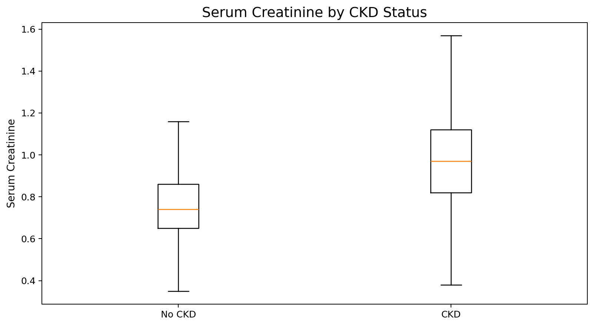
Finding: Serum creatinine shows a clear separation signal, with higher values in CKD cases.
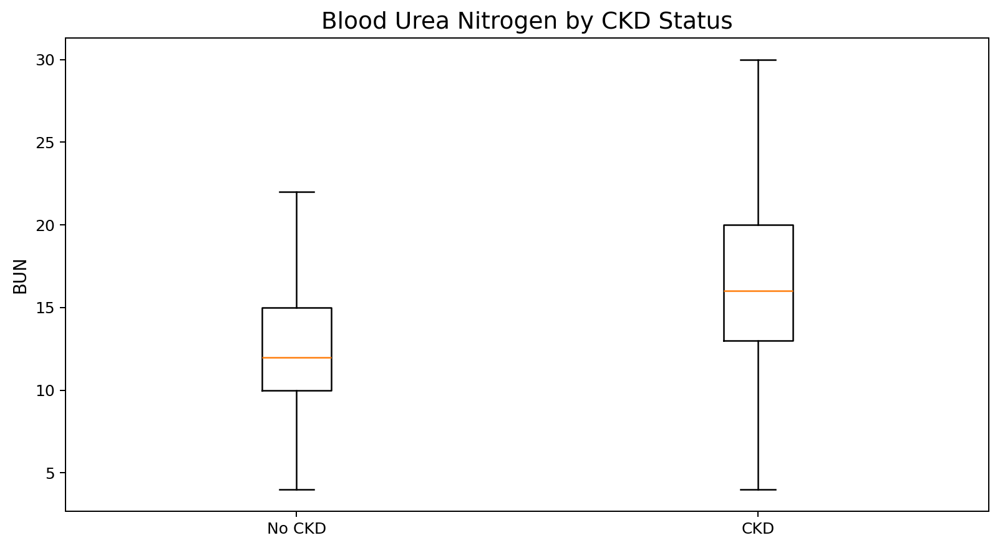
Finding: BUN is higher among CKD cases, supporting renal-function relevance.
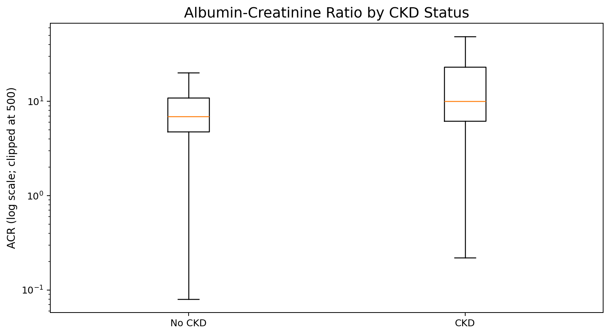
Finding: ACR is highly right-skewed and has a stronger signal in CKD; log scaling is useful for visualization.
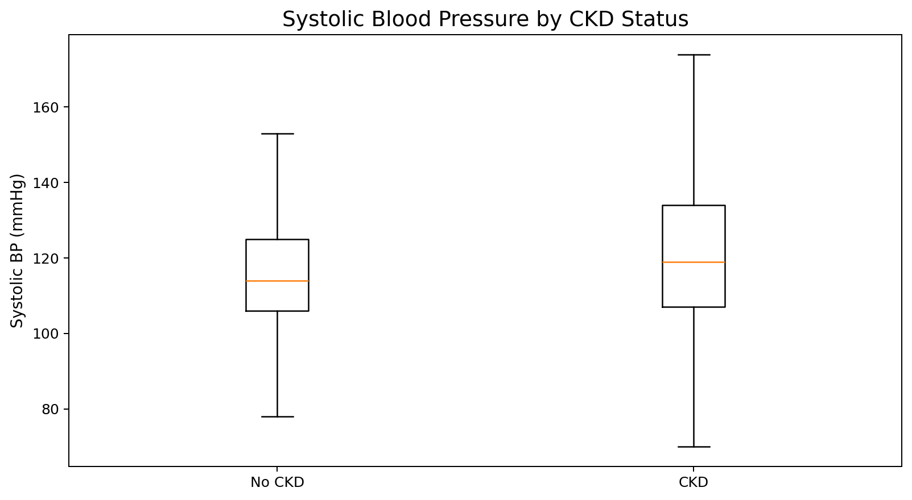
Finding: Systolic BP tends to be higher in CKD, although distributions overlap.
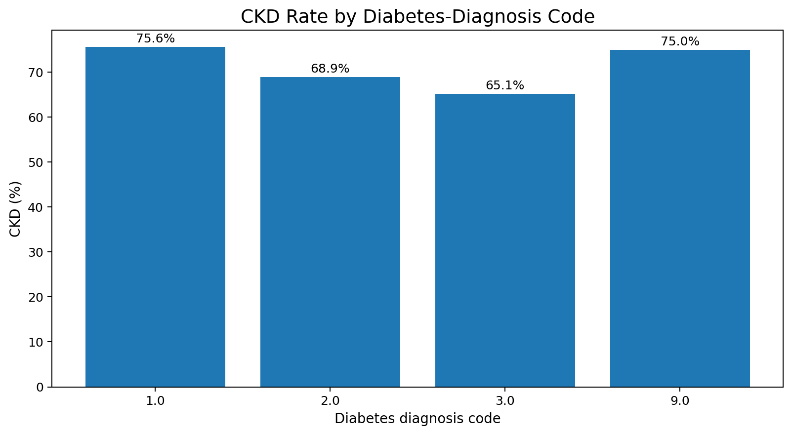
Finding: Diabetes coding shows different CKD rates, making metabolic history potentially useful.
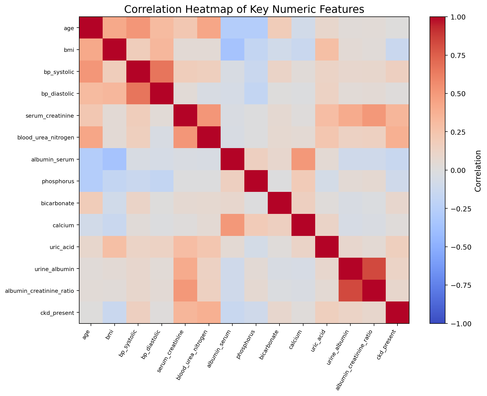
Finding: Selected variables show clinically plausible associations with the target; correlation is used for EDA, not as the sole feature-selection criterion.
participant_id is an identifier and is removed. ckd_stage is downstream of CKD classification and is removed. egfr is excluded from the primary model because the supplied target is extremely aligned with eGFR bins; including it would make the task closer to reproducing the target definition than independent screening.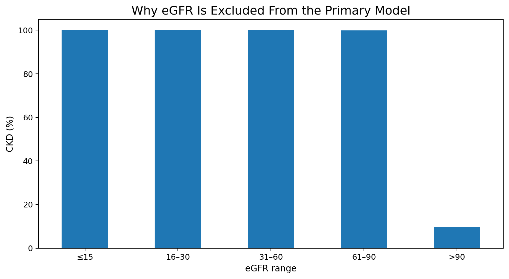
Diagnostic finding: CKD status is almost deterministic across eGFR ranges in this supplied file, supporting the decision to exclude eGFR from the primary model.
| Model | Accuracy | Precision | Recall | F1 | ROC-AUC | Single-fit time (s) |
|---|---|---|---|---|---|---|
| XGBoost | 0.9950 | 0.9982 | 0.9946 | 0.9964 | 0.9999 | 0.19 |
| LightGBM | 0.9958 | 0.9976 | 0.9964 | 0.9970 | 0.9999 | 0.91 |
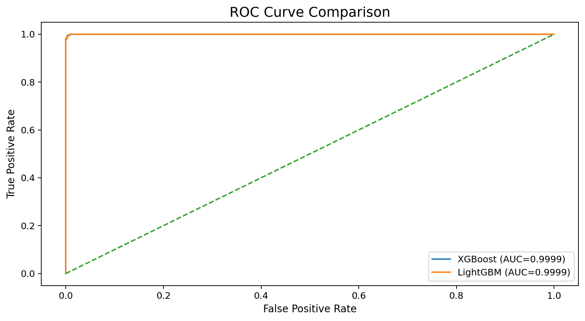
Both gradient-boosted tree models perform extremely well on the supplied dataset even after removing eGFR and CKD stage. This should be interpreted cautiously: the target construction and cross-sectional nature of the file may make the task easier than real-world prospective screening. External validation on an independent cohort would be required before clinical use.